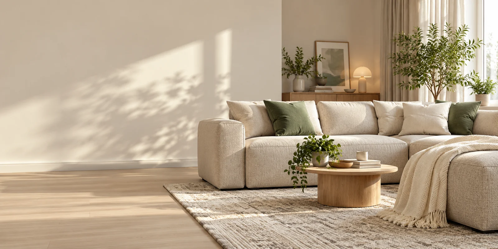
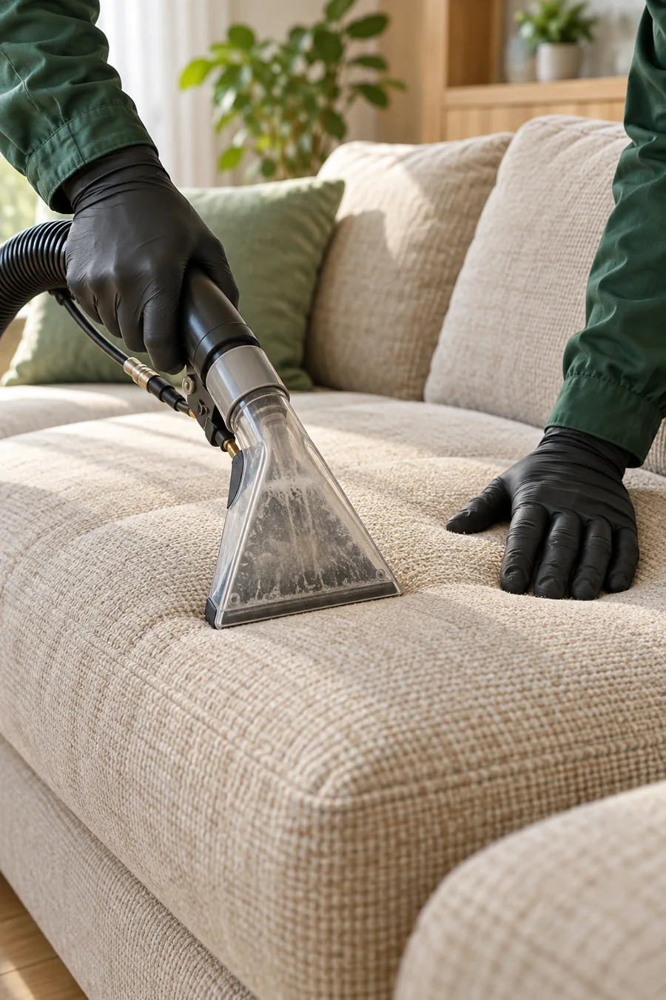

01
Мягкая мебель
Витебск и Витебская областьЧистая мебель.
Чистая мебель.
Спокойный дом.
Выездная химчистка мебели, ковров и салона авто. Мойка окон. Оценка по фотографиям до приезда.
Объём и стоимость согласуем до начала работы
Более 10 лет опытаЗнаем особенности материалов
Выезд к вамВитебск и область
Цена до началаСогласуем объём заранее
Реальные работыФото до и после без стоков
Все основные направленияВыберите, что
Выберите, что
нужно почистить.
У каждой услуги — отдельная страница с процессом, ограничениями и подготовкой. Без случайных картинок и лишнего шума.
01Химчистка мебелидиваны, кресла, стулья, матрасы02Химчистка дивановпрямые и угловые диваны03Химчистка матрасоводноспальные и двуспальные матрасы04Кресла и стульямягкие, офисные и обеденные кресла и стулья05Химчистка ковровковры с коротким и длинным ворсом06Чистка ковролинаковролин в квартирах и офисах07Химчистка салона автосиденья, обивка, ковролин и багажник автомобиля08Мойка окон и витринокна, рамы, витрины и балконное остекление
Другая задача? Также обсуждаем кожаную мебель, окна после ремонта и комплекс из нескольких услуг.
Спросить в ViberТолько реальные работыНе обещания.
Не обещания.
Результат.
Один объект до и после обработки. Без стоковых фотографий в портфолио и без цветокоррекции, которая приукрашивает результат.
Освещение и ракурс на фотографиях могут отличаться. Результат конкретной чистки зависит от материала, износа и происхождения загрязнений.

01
Бережно к материалу
Способ чистки выбираем после оценки поверхности.
Как мы работаемПонятно на каждом
Понятно на каждом
этапе.
Более 10 лет работаем с мебелью и покрытиями. Не начинаем с универсального средства: сначала оцениваем материал, состояние и ограничения.
01
Показываете задачу
Присылаете общий вид, пятна и размеры в Viber.
02
Получаете понятную оценку
Обсуждаем возможности, состав работы и стоимость.
03
Подбираем способ
Проверяем материал и только затем начинаем чистку.
04
Принимаете результат
Показываем работу и объясняем правила высыхания.
Цена без сюрпризовРасчёт под
Расчёт под
вашу задачу.
Пришлите фотографии и размеры. Назовём предварительную стоимость, а окончательный объём согласуем до начала работы.
Получить оценкуПодробнее о расчётеРазмер и материал
Тип обивки, площадь покрытия или количество створок.
Состояние
Пятна, запахи, износ и предыдущие обработки.
Место и объём
Адрес выезда, доступ и количество изделий.
Коротко о важномВопросы
Вопросы
перед заказом.
Если вашей ситуации нет в списке, пришлите фото — ответим предметно.
Сколько стоит химчистка?
Стоимость зависит от размера, материала и загрязнений. Пришлите в Viber общий снимок и фото пятен: обсудим объём и предварительную цену. Итоговую стоимость согласуем до начала работы.
Вы приезжаете на дом?
Да, выезжаем по Витебску и Витебской области. Условия выезда за город, доступ к воде и электричеству уточняем при записи.
Можно ли убрать любое пятно?
Не всегда. Результат зависит от происхождения и давности пятна, материала и предыдущих обработок. Выгорание, износ и повреждение красителя чистка не исправляет.
Сколько сохнет мебель?
Время зависит от ткани, наполнителя, объёма влажной обработки, температуры и вентиляции. Ориентир мастер сообщит после оценки. Пользоваться мебелью стоит после полного высыхания.
Что подготовить до приезда?
Освободите доступ к мебели или покрытию, уберите личные и хрупкие вещи. Для мойки окон освободите подоконники. Остальные детали уточним при записи.
Как отправить фотографии?
Откройте Viber по ссылке на сайте или позвоните по номеру +375 (29) 597-37-13. В сообщении приложите общий вид, проблемные участки и коротко опишите задачу.
Оценка по фотографиямПокажите задачу.
Покажите задачу.
Мы скажем по делу.
Пришлите общий снимок и крупные фото загрязнений. Обсудим возможности чистки, стоимость и удобное время до выезда.
+375 (29) 597-37-13Витебск и область · выезд по договорённости
Быстрый запрос
Подготовить сообщение
Заполните три поля — сайт соберёт текст, который останется отправить в Viber вместе с фото.